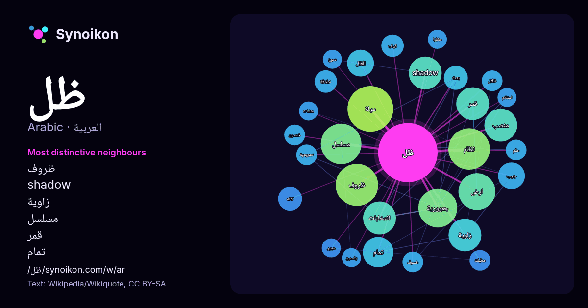

العربية · قائمة كلمات اليوم
ظل
“shadow” · الكلمات الموجودة حولها في 725 ورودًا من ويكيبيديا, Wikiquote.

الجيران الأكثر تميّزًا
- ظروف 17×
- shadow 16×
- زاوية 12×
- مسلسل 11×
- قمر 11×
- تمام 11×
- الظل 10×
- جيب 10×
- كانه 8.8×
- بعث 7.9×
- جمهورية 7.6×
- دولة 7.3×
- منصب 7.2×
- انتخابات 7.2×
- غياب 7.0×
- مطبات 7.0×
- خمسون 6.8×
- ظلال 6.8×
- خسوف 6.7×
- خلافة 6.6×
× = كم مرة أكثر مما في نصوص ويكيبيديا العامة.
الجيران الأكثر تكرارًا
- دولة 29
- ظروف 25
- نظام 24
- مسلسل 23
- جمهورية 21
- ارض 19
- تحت 17
- رئيس 17
- حزب 16
- حكومة 16
- shadow 15
- اخر 15
- انتخابات 15
- حكم 15
- زاوية 15
- قمر 15
- منصب 15
- حياة 14
- تمام 13
- فيلم 13
في السياق
- هو نظام للتعليم عن بعد أنشأته وزارة التعليم في المملكة العربية السعودية في ظل انتشار جائحة فيروس كورونا لتسهيل التعلم على طلاب الروضة والمرحلة الابتدائية Wikipedia snippets · منصة مدرستي
- ظل مسلسل تلفزيوني لبناني عُرض عام 2022 خلال شهر رمضان، من تأليف زهير رامي الملا وإخراج محمود كامل. تدور أحداث المسلسل حول جبران، مصمم أزياء عالمي في الخمسين Wikipedia snippets · ظل (مسلسل)
- نينجا: ظل الدموع Ninja: Shadow of a Tear (الإنجليزية) تعديل - تعديل مصدري - تعديل ويكي بيانات نينجا: ظل الدموع (الإنجليزية: Ninja: Shadow of a Tear) هو Wikipedia snippets · نينجا: ظل الدموع (فلم)
- ظل القانون Shadow of the Law (الإنجليزية) إعلان الفيلم تعديل - تعديل مصدري - تعديل ويكي بيانات ظل القانون (الإنجليزية: Shadow of the Law) هو فيلم أبيض Wikipedia snippets · ظل القانون (فلم 1926)
- مسعود ميرزا ظل سلطان (الفارسية: مسعود میرزا ظلالسلطان) (5 كانون الثاني 1850 في تبريز - 2 تموز 1918 في أصفهان)، كان أميرًا إيرانيًا من سلالة القاجار؛ كان Wikipedia snippets · مسعود ميرزا ظل السلطان
- في 1979 فاز منتخب العراق بالبطولة، لينهي الاحتكار الكويتي للبطولة والذي ظل 4 دورات متتالية في 9 سنين منذ بدء البطولة. انسحب كلاً من المنتخب السعودي والمنتخب Wikipedia snippets · كأس الخليج العربي
- مسلسل ظل الحلم، دراما خليجية، تدور في إطار اجتماعي حول بعض المشاكل التي يتعرض لها أبطال العمل، من خلال أحلامهم وفي منامهم وتفسير تلك المشاكل في ضوء المجتمع Wikipedia snippets · ظل الحلم
- خمسون ظل طليق هو فيلم رومانسي دراما من إخراج جايمس فولي مبني على رواية تحمل نفس الاسم للكاتبة إي. إل. جيمس،الفيلم من بطولة داكوتا جونسون،جيمي دورنان،اريك Wikipedia snippets · خمسون ظل طليق (فلم)
كلمات أخرى
- أغنية
- إله
- تاريخ
- جبل
- جرس
- جزيرة
- جسر
- حديقة
- حصان
- حقيقة
- حياة
- خبز
- خريطة
- خريف
- ذهب
- زمن
- ساعة
- شاي
- شتاء
- صحة
- صحراء
- صمت
- صيف
- طبيعة
- طريق
- طعام
- عائلة
- عاصفة
- عسل
- علم
- عمل
- غابة
- فن
- قطار
- قطة
- قلب
- قوة
- كلب
- لغة
- ماء
- مال
- مدينة
- مرآة
- مطر
- ملح
- مناخ
- موت
- نجم
- والدة
حُسبت مسبقًا في 2026-10-09 بالإعدادات الافتراضية (±5 كلمات، مدوّنة متوسطة). يمكن للخريطة التفاعلية تحديثها ببيانات حية.
واجهة مترجمة آليًا؛ نرحب بالتصحيحات.